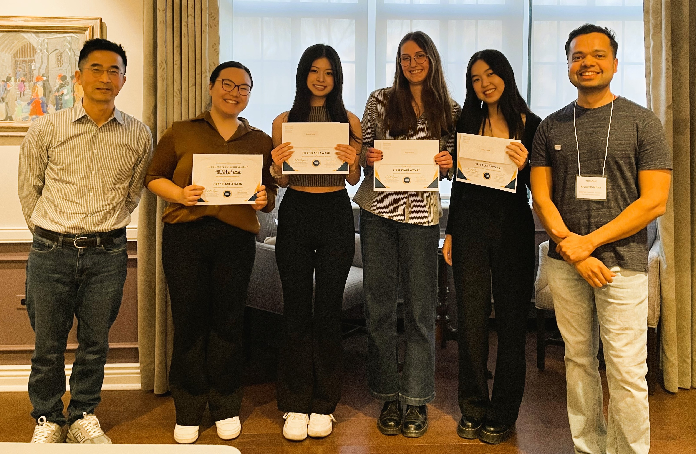
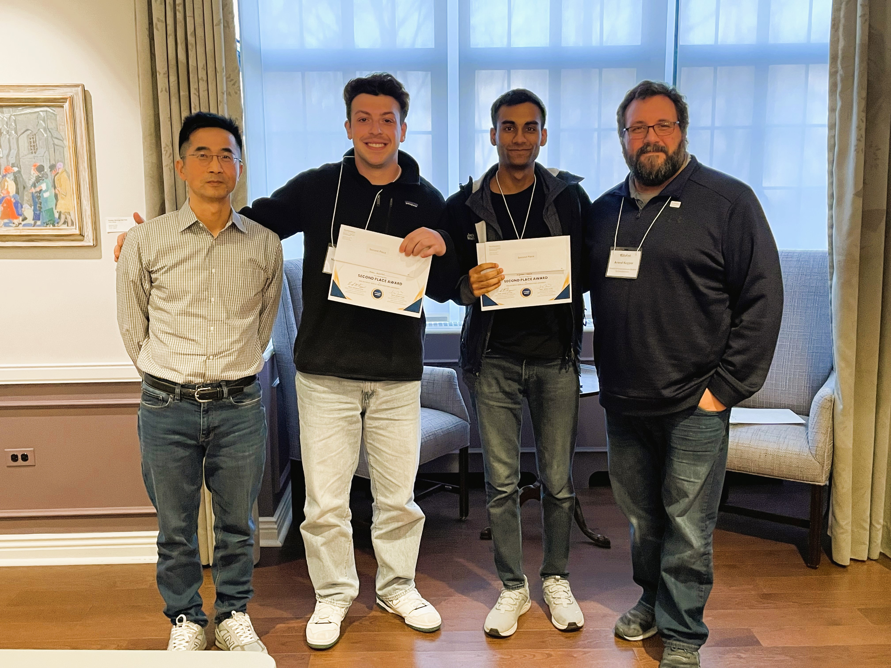
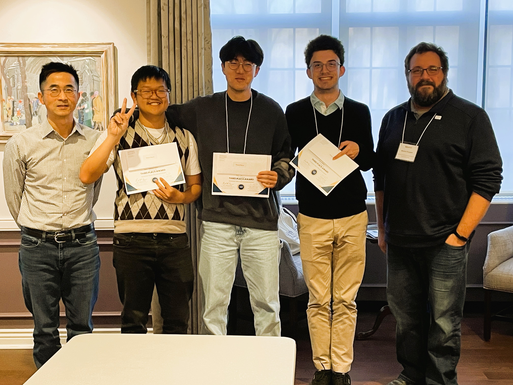
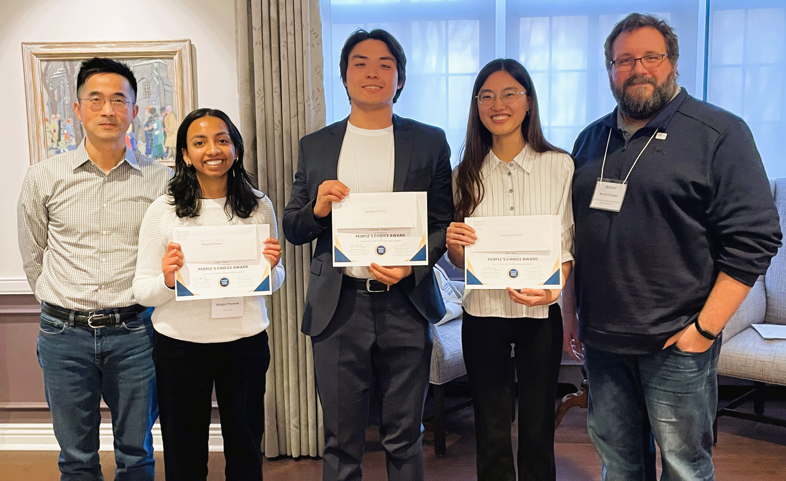

Participant Teams 🔥
After 3.5 hours of team presentations and nearly an hour of thoughtful deliberation by the judges, four standout teams emerged as the winners of this year’s DataFest.
1. First Place Award - GGAP !!!!
(Alyssa, Paisley, Grace & Grace)
The 2025 epilogue to the GGAP 303 sequence trilogy
Mentor: Cathy Kim

GGAP stood out for their creativity, clarity and polish!—earning the top spot on four of five judges’ lists. Not only did they build a product ready for real-world use, but their explanation of the technical details was both clear and compelling. And just when the judges thought it couldn’t get better, GGAP brought the house down with a clever roleplay—two teammates acted as clients, while the others demoed the product like it was a live pitch. It felt like a real client meeting!
2. Second Place Award - Team NA !!!
(Noah & Aryaman)
Filling in the gaps, one data point at a time
Mentor: Zihan Zhao

3. Third Place Award - Hot Tea !!
(Ice, Robert, and Owen)
Just an ordinary dataset, but with the right model, we can make it trend like a hot tea
Mentor: David Frost

4, People’s Choice Award - The Prompt Engineers !
(Harrison, Abigail, Jinhe, and Olzhasbek)
We may not have the answers, but we will be sure to phrase a question well enough to fake it
Mentor: Xinhui Qian
